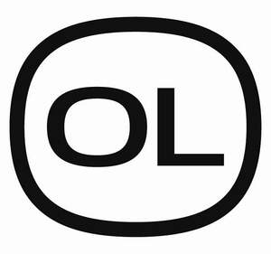
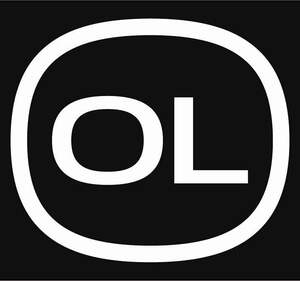

Trade Mark Journal No.2026/010 6 March 2026
UK00004340015 12 February 2026 (5,32)
Mark 1

Mark 2

- Class 5
- Dietary supplements; Nutritional supplements; Mineral supplements; Nutritional supplements in the nature of powdered drink mixes, not for medical purposes; Dietary food supplements in the nature of powdered drink mixes, not for medical purposes; Food supplements for sportspeople; Vitamin drinks; Dietary supplement drinks; Nutritional supplement drinks; Powdered nutritional supplement drink mixes; Electrolyte drinks for medical purposes; Electrolyte replacement beverages for medical purposes; Powdered nutritional supplement energy drink mix; Meal replacement drinks for medical purposes; Dietetic drinks adapted for medical purposes; Dietary drink mixes for enhancing and improving sports performance; Nutritional drink mixes for enhancing and improving sports performance; Dietary supplements for enhancing and improving sports performance; Nutritional supplements for enhancing and improving sports performance; Rehydration preparations; Oral rehydration preparations; Dietary supplements in the form of gels, tablets, bars, beverages and preparations for enhancing and improving sports performance; Nutritional supplements in the form of gels, tablets, bars, beverages and preparations for enhancing and improving sports performance; Ready-to-drink meal replacement drinks.
- Class 32
- Sports drinks containing electrolytes; Isotonic beverages; Isotonic drinks containing electrolytes; Energy gel beverages with electrolytes; Energy gel drinks with electrolytes; Non-alcoholic drinks enriched with vitamins and mineral salts; Non-alcoholic beverages enriched with vitamins and mineral salts; Soft drinks; Juice drinks; Fruit juice drinks; Protein drinks; Protein-enriched sports drinks; Sports drinks; Energy drinks; Carbohydrate drinks; Frozen soft drinks; Frozen sports drinks; Frozen carbonated drinks; Non-alcoholic drinks; Preparations for making soft drinks; Preparations for making sports drinks; Preparations in the form of powders, dissolvable tablets and gels for making soft drinks; Preparations in the form of powders, dissolvable tablets and gels for making sports drinks; waters; coconut water; aerated water.
OCTOLYTE LIMITED
Representative: Forresters IP LLP